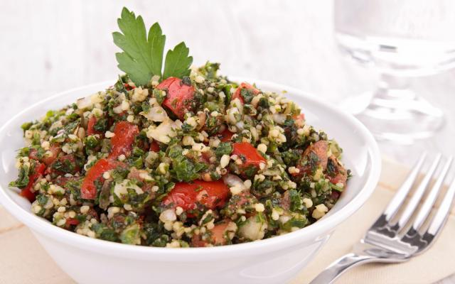

Tabule
Tabule é um prato sadavél pois ele é completo, com proteinas e fibra

ingredientes
- 3 filés de peito de frango
- 2 pimentões grandes (um verde e um vermelho)
- 1 cebola média
- 1 xícara de chá de cenoura
- 1 xícara de chá de couve-flor
- 2 xícaras de chá de brócolis frescos picados
- 2 colheres de sopa de azeite
- 1 e 1/2 dente de alho picado
- 2 colheres de sopa de mel
- 3 colheres de sopa de shoyu
- Sal a gosto
Modo de preparo
- Reúna todos os ingredientes
- Fatie em tiras os pimentões, a cebola e a cenoura
- Em uma frigideira ou em uma panela grande, coloque o azeite, a cebola e o alho e refogue em fogo baixo
- Quando a cebola ficar transparente, adicione os pimentões, a cenoura, a couve-flor e o brócolis
- Corte o frango em cubos ou em pequenas tiras e tempere à sua maneira
- Em outra panela, refogue o frango até que fique completamente cozido/frito
- Deixe dourar e adicione o shoyu
- Junte o frango com os legumes, adicione o vinagre de maçã e o mel
- Misture bem, deixe dourar e desligue o fogo